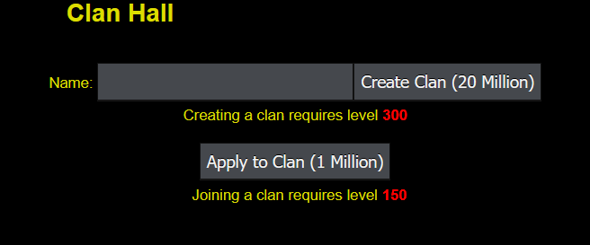
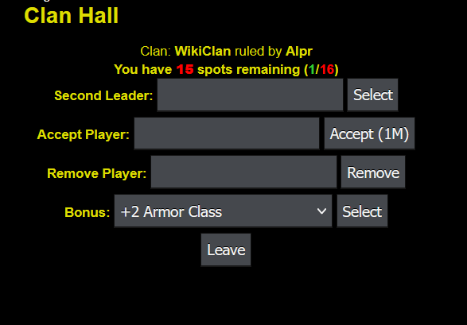
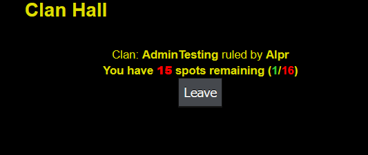
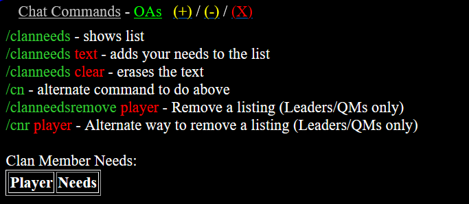

Overview

You can create or join a clan at 2,2 in Royal University. This enables you to have various, powerful benefits that you won't get if you fly solo. To talk among other clan members, you use the Race/Clan Chat view.
Starting a Clan
If you want to make your own clan, you must be level 300 and have 20M Gold available to spend. Simply enter the name of the clan you want to create, and select "Create Clan".
A blue message will appear in chat showcasing a clan was just created along with the name of the player who made it.
Joining a Clan
If you want to join a clan, you must be level 150 and have 1M Gold available to spend. Simply select "Apply to Clan". This adds you to the pool where other clans can accept you.
A message will appear as a private message and to your clan when a new member has joined.
Clan Hall (Leaders)

The Clan Hall is one of the hubs for your clan; the other will be explained later. In it, the options vary depending on if you're a leader or a clan member.
At the top will always display who is running the clan along with how many spots in the clan you have remaining. This can change round to round, but usually it's 16 member slots.
As a Leader, you have 5 options:
- Second Leader: This will set a clan member to your Co-Leader position, who has all the same powers as you do except cannot disband the clan. Assign this to someone you trust the most.
- Accept Player: After a player has applied to join a clan, you can enter their name here and pay 1M gold to accept them into your clan.
- Remove Player: You can kick any clan member (even your Co-Leader) with this option.
- Bonus: As your clan grows in power, you gain access to useful buffs that are applied to all clan members (see Clan Power). Only the Leader & Co-Leader can set the bonus, with one exception: if the Leader and Co-Leader are AFK for more than 10 minutes, the next highest clan member online that is currently playing will be given clan bonus power until that condition is no longer met. This helps clan members being able to change the bonus while the leaders are asleep, instead of being stuck on a clan bonus that they cannot currently use.
- Leave: You can leave the clan, with a few different outcomes:
- Leader Leaves (w/ Co-Leader): Co-Leader becomes new leader
- Leader Leaves (w/ No Co-Leader): Clan is disbanded. Everything in the clan treasury and vault are lost and not refundable!!
- Co-Leader Leaves: Co-Leader slot is now empty
In your clan chat, the leader will be displayed as a gold colored name while the co-leader is silver.
Clan Hall (Members)

The Clan Hall is one of the hubs for your clan; the other will be explained later. In it, the options vary depending on if you're a leader or a clan member.
At the top will always display who is running the clan along with how many spots in the clan you have remaining. This can change round to round, but usually it's 16 member slots.
As a clan member, you only have the option to leave the clan. A message will be sent to the clan stating as such, and you are no longer part of the clan. The Clan Hall options will revert back to creating/joining a clan again.
As mentioned in the Clan Hall (Leaders) section above, you can gain access to the clan bonus change power under certain conditions temporarily.
Clan Command
Any member can view their clan's information in-game by using the command /clan. This will display:
- Clan Name
-
of members
- Who it is ran by
- How much Clan Power your clan has
- Location of Clan Kingdom
- Tax Rate
- Clan Buildings (Mine/Misc)
- Clan Goal
You can also use /members to display all clan members so you know who is online.
Clan Needs

Through another in-game command /clanneeds, you can keep a tally of what players are requesting and hopefully do your best to fulfill them and keep players happy. All available information on how to use clanneeds are at the top of the command, but you can:
- Display the list
- Add your needs to the list
- Remove your needs from the list
- Remove a listing (Leaders/QMs Only)
QMs are explained in the Clan Armory section of Clan Kingdom. A shorthand version of the command is /cn.
Clan Information Hub
Related clan articles:
- Clan Kingdom (including Clan Armory, Clan Mine and Clan Misc)
- Clan Power (including Clan Bonus)